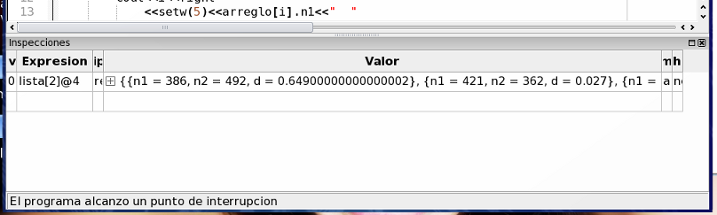

|
Parte 3: Paso 3
|
0
1
2
3
4
|
Borre las inspecciones de la tabla (seleccionándolas y presionando la tecla delete/suprimir, o con la opción Limpiar tabla de inspecciones del menú contextual).
Ingrese ahora la inspección lista y observe como se muestra toda la lista en un solo renglón. De forma similar a las estructura registro del paso 1, puede hacer doble click para desarmar la inspección en diez inspecciones (una por elemento), o seleccionar la opción Mostrar en tabla separada del menú contextual para visualizarla en una nueva ventana.
Además de estas dos opciones, existen dos alternativas más para visualizar solo una parte del arreglo, por ejemplo desde los índices 2 a 5 (cuatro elementos), ingresando una notación especial. Para ello puede introducir alguna de las siguientes expresiones:
- lista[2...5]: el uso de tres puntos suspensivos generará automáticamente 4 inspecciones variando el índice entre 2 y 5.
- lista[2]@4: el uso de la arroba significa que se deben mostrar 4 variables ubicadas en la memoria en forma contigua (como ocurre con los arreglos lineales). A diferencia del primer método, de esta forma se genera una sola inspección con la lista de cuatro elementos.

Volver... Continuar...